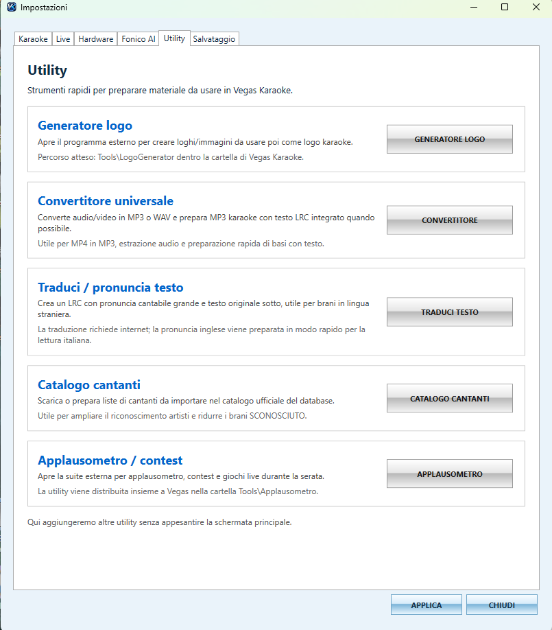

Utility integrate per preparare materiale karaoke
La versione 2.3.1 aggiunge una scheda Utility con strumenti rapidi per creare loghi animati, convertire file audio/video e preparare materiale da usare in Vegas Karaoke Player.
Strumenti rapidi senza appesantire il player
Le utility sono raccolte in una sezione separata delle impostazioni, così il player principale resta pulito e veloce durante la serata.
- Generatore logo per creare immagini, GIF e MP4 da usare come logo karaoke.
- Convertitore universale per preparare file audio/video e basi con testo LRC.
- Accesso diretto dagli strumenti di Vegas Karaoke Player.

Crea loghi animati per lo schermo karaoke
Logo 3D GIF Studio permette di partire da un PNG e generare anteprime, GIF o MP4 con effetti come neon, profondità 3D, sfondo trasparente o colore personalizzato.
- Preset grafici per animazioni logo.
- Esportazione GIF e MP4.
- Impostazioni di fluidità, durata frame, dimensione canvas e grandezza logo.
- Effetti glow/neon e spessore 3D regolabili.
Converti audio e video per preparare basi karaoke
Il convertitore universale aiuta a trasformare rapidamente file video o audio in MP3, estrarre audio dai video e preparare MP3 karaoke con testo LRC integrato quando possibile.
- Conversione video/audio in MP3.
- Selezione file sorgente e cartella uscita.
- Supporto LRC/TXT per preparazione materiale karaoke.
- Scelta qualità, ad esempio 256k.

Perché è utile nel live
Prima della serata puoi preparare loghi animati, estrarre audio dai video, convertire materiale e organizzare file compatibili con il player senza usare troppi programmi esterni.
Nuove Utility 2.3.1
Catalogo Cantanti
Scarica o prepara liste di cantanti da importare nel catalogo ufficiale del database.
Apri paginaApplausometro / Contest
Gestisci applausi, contest live, sfide e giochi karaoke con schermo pubblico.
Apri paginaTraduci / Pronuncia testo
Crea un LRC con pronuncia cantabile grande e testo originale sotto, utile per brani stranieri.